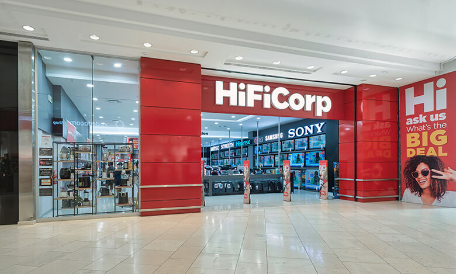
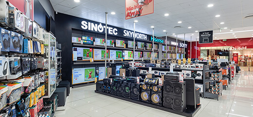
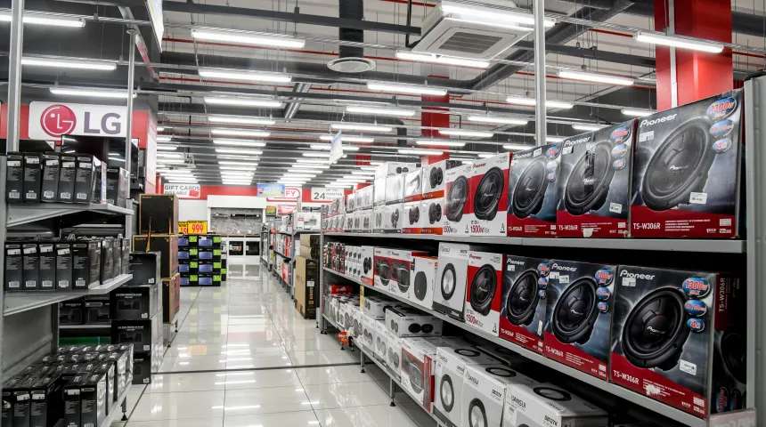

High fidelity (often shortened to Hi-Fi or HiFi) is the high-quality reproduction of sound.[1] It is popular with audiophiles and home audio enthusiasts. Ideally, high-fidelity equipment has inaudible noise and distortion, and a flat (neutral, uncolored) frequency response within the human hearing range.
High fidelity contrasts with the lower-quality "lo-fi" sound produced by inexpensive audio equipment, AM radio, or the inferior quality of sound reproduction that can be heard in recordings made until the late 1940s.
WHERE TO FIND US
@NorthWest side of the mall
  